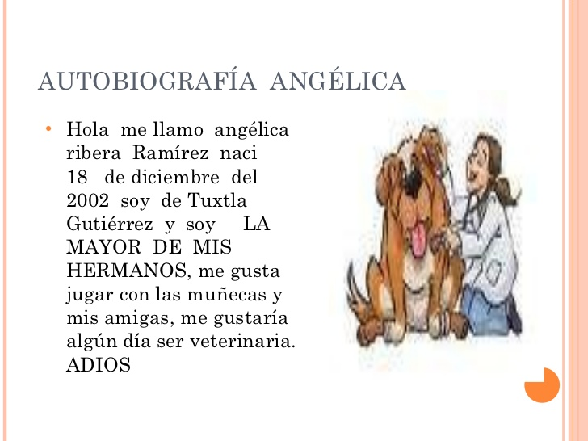
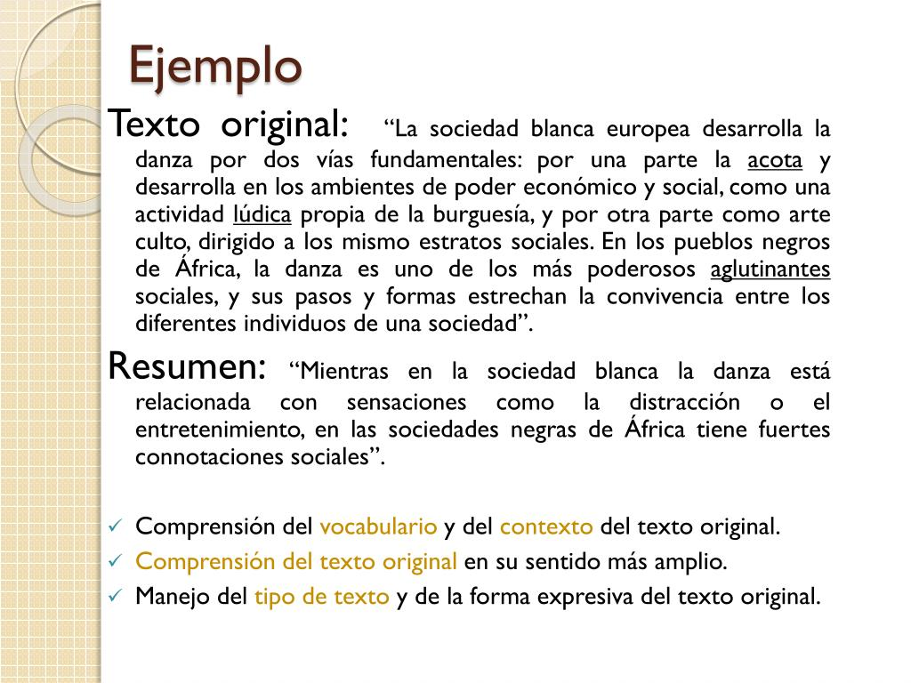

Pronombres
Comenzaremos con los pronombres.
Los Pronombres son palabras que sustituyen al nombre para evitar su repetición. Es decir, señalan o representan a personas, cosas o hechos que son conocidos por el que habla y el que escucha.
Los pronombres son palabras que se emplean para referirse a las personas, los animales o las cosas sin nombrarlas (yo, tú, él, nosotros, eso, aquel),
siendo de esta manera posible; sustituir al sustantivo, definir o variar el número, género y hasta persona en una oración.
Por ejemplo;
Fernando estudia publicidad. – Él estudia publicidad.
En el ejemplo anterior; «Fernando» se puede sustituir por el pronombre «Él» y la oración no pierde sentido ya que el pronombre no cambia el género (masculino) ni el número (singular).
Autobiografia.
Ahora que sabemos que son los pronombres.
Veremos que es un Autobiografia.
Una autobiografía es el relato de tu propia vida, narrada por ti mismo/a. En la autobiografía tú eres el protagonista y el narrador.
En tu autobiografía has de contar experiencias que has tenido en tu vida y los recuerdos que te han dejado los hechos que has vivido, así como los efectos que estos hechos han producido en ti.
Para escribir tu autobiografía puedes seguir los puntos del organizador gráfico que te dejo debajo y que son los siguientes:
¿Como te llamas? ¿Cuál es tu fecha de nacimiento? ¿Dónde naciste?
Y demas cosas que te describan.
Puedes urilizar esta imagen como referencia.
Veamos un video para saber mejor que es un autobiografia.
Increible, ahora mira una biografia para que te guies.
Intenta escribir tu biografia en tu cuaderno.

Titulo y Sub-titulo.
Bien, ahora veamos que es el titulo y sub-situlo.
El título: es la palabra o frase con que se da a conocer un escrito, en cualquier tipo de texto, es decir, anunciar de forma clara el contenido a presentar.
El subtitulo: son los subtemas que nos amplían la información con relación a él.
Uso de títulos y subtítulos.
El título introduce al tema, es decir el asunto básico y primordial de lo que trata el texto.
Los subtítulos se usan para distinguir los elementos que integran el tema, llamados subtemas.
Veamos un video para saber mejor para que se utilizan los titulos y subtitulos.
Signos de puntuacion.
Ahora veremos que cuales son los signos de puntacion.
Los signos de puntuación son usados para darle sentido a las frases y oraciones, funcionan para distinguir, delimitar, otorgar jerarquía a nivel sintáctico y ayudar a lector a determinar cuáles son las ideas principales y las secundarias dentro de un párrafo.
Sin ellos, como ya que ha probado en distintas ocasiones mediante diversos escritos, la comprensión lectora se dificultaría, sin embargo son muchos lo que no entienden claramente como emplearlos dentro de una oración.
Veamos los distintos signos de puntuacion.
Punto y aparte (.)
Este singo de puntuación de utiliza para separar dos párrafos que contienen ideas diferentes, representa el fin de una idea y el comienzo de otra nueva
Por ejemplo: «María es una chica muy glotona, a veces puede pasar todo el día comiendo. Una vez cuando estábamos en su casa….».
Punto y seguido (.)
Se emplea dentro del mismo párrafo para separar dos enunciados diferentes que sin embargo tienen algún tipo de vinculación.
Por ejemplo: «María comía en grandes cantidades, yo no podía parar de verla. La verdad es que sentí un poco de malestar».
La coma (,)
Ésta funciona para señalar pausas dentro de la oración, pero cuenta con varios usos, el primero de ellos es para enumerar, por ejemplo: «me compré una camisa, un pantalón y unos zapatos». Se usa para aclaraciones, incisos, y ampliaciones.
Por ejemplo: «María, mi sobrina, adora comer» / «Me encanta el color rojo, sobre todo como luce en mi piel».
Además se utiliza para dar paso a explicaciones, por ejemplo: «Tendré que ir al médico, porque me duele mucho el estómago».
El punto y coma (;)
Representa en la oración una pausa mayor que la coma, pero menor que el punto y seguido. Se usa para separar elementos en una enumeración cuando hay explicaciones complejas.
Por ejemplo: «éste es el plan, ustedes irán primero, por la izquierda; nosotros iremos a la derecha; y el tercer grupo por el medio».
En general el uso de este signo es subjetivo pues casi siempre puede sustituirse por el punto y seguido, por lo que será a juicio del escritor.
Las comillas ("")
Su uso es simple, se coloca para abrir y cerrar citas, frases, palabras u sentencias de carácter irónico, escritas en otro idioma o para realizar algún tipo de indicación acerca de esa parabla. También se les puede encontrar en esta versión gráfica ("").
Dos puntos (:)
Los dos puntos son un signo de puntuación que se usa para llamar la atención o hacer una pausa enfática sobre lo que sigue. Es representado con dos puntos, uno suspendido sobre el otro (:).
Al igual que la coma, el punto y el punto y coma, los dos puntos son un signo delimitador, es decir, que es utilizado para delimitar unidades sintácticas inferiores al enunciado.
Acentos
Vamos muy bien, sigamos adelante.
Hoy sera los Acentos.
En nuestra lengua, las palabras pueden clasificarse de acuerdo a la ubicación de su sílaba tónica, es decir, de aquella en la cual recae la mayor pronunciación de la palabra.
Vamos a ver las clasificaciones:
Las palabras agudas, graves, esdrújulas y sobresdrújulas se diferencian por su sílaba acentuada o tónica.
En español, cada una de estas palabras tiene el acento prosódico, o mayor fuerza de voz, en una sílaba distinta y lleva tilde o acento ortográfico conforme a las normas de acentuación.
De este modo, al hablar de palabras agudas, graves, esdrújulas y sobresdrújulas se hace referencia a diferentes tipos de palabras según su acentuación.
Para saber a qué clase pertenece una palabra hay que identificar su sílaba tónica.
Palabras AGUDAS
Las palabras agudas son las que tienen la mayor fuerza de voz en la última sílaba. Llevan tilde solo cuando terminan en -n, en -s o en una vocal.
Veamos uno ejemplos:
-además
-ají
-mamá
-maní
-sofá
-tacón
-animal
-calor
-pared
-pesar
-reloj
-salud
-señor
Palabras GRAVES o LLANAS
Las palabras graves o llanas son las que tienen la mayor fuerza de voz en la penúltima sílaba. Se acentúan gráficamente solo cuando terminan en consonantes distintas a -n y -s. No llevan tilde cuando terminan en vocal o en las consonantes -n y -s.
Veamos uno ejemplos:
-ámbar
-cárcel
-césped
-cóndor
-difícil
-fácil
-fútbol
-lápiz
-barco
-calendario
-llave
-mantel
-palabra
-planeta
-saludo
Palabras ESDRUJULAS
Las palabras esdrújulas tienen la mayor fuerza de voz en la antepenúltima sílaba y siempre llevan tilde o acento gráfico.
Veamos uno ejemplos:
-ábaco
-brújula
-cámara
-esdrújula
-médico
-oxígeno
-pájaros
-pirámide
Palabras SOBREESDRUJULAS
Las palabras sobresdrújulas tienen la mayor fuerza de voz en la sílaba ante o trasantepenúltima, es decir, la sílaba anterior a la penúltima, y siempre llevan tilde o acento gráfico.
Las sobreesdrújulas son palabras compuestas y poco frecuentes en el español hablado y escrito.
Veamos uno ejemplos:
-cayéndoseles
-encontrándomelo
-jurándosela
-permítasenos
-vendiéndoselos
Ahora veamos un video que nos explique mejor.
Personajes
Increible ahora sigamos con el tema.
Hoy sera los personajes.
Un personaje es un ser animado real o ficticio que actúa en un relato (literario, dramático o visual). Es decir, un personaje es un ente al que se le atribuyen una serie de acciones, palabras y/o pensamientos en el marco de una historia.
Los personajes pueden ser personas, animales, cosas animadas, seres fantásticos o seres sobrenaturales. En todo tipo de relato o narración hay personajes. Por ejemplo, obras de teatro, novelas, cuentos, películas, series de TV o, incluso, pinturas o esculturas que cuentan historias.
Veamos los tipos de personajes.
Existen diversas formas de clasificar los personajes, atendiendo a una u otra consideración. Por ejemplo:
-Según su participación en la historia.
De acuerdo a su importancia en el desarrollo de la trama, pueden ser:
*Personajes primarios o principales. Los más importantes del relato, en torno a los cuales gira la historia y a los que más acompañamos a lo largo de ella.
*Personajes secundarios. Son los personajes de reparto, es decir, los que intervienen en la historia pero no son muy relevantes o determinantes en ella, y los vemos sólo cuando resulta necesario.
*Personajes terciarios. Aquellos que apenas intervienen circunstancialmente en la historia, sin tener demasiado que ver en ella, y que quienes no sabemos prácticamente nada.
-Según su rol narrativo.
Atendiendo ahora al papel que desempeñan en la trama, podemos hablar de:
*Protagonistas. Los personajes principales del relato, sobre quienes tiene que ver la trama. Pueden ser héroes, antihéroes o simplemente protagonistas circunstanciales, pero sobre ellos versa el relato y rara vez éste puede continuar si ellos mueren o han desaparecido.
*Antagonistas. Aquellos que adversan al protagonista, que se oponen a que cumpla con sus aspiraciones o que simplemente tienen deseos contrarios a los suyos.
*Tritagonistas. Son los personajes que no toman partido en la historia, sino que la transitan de manera eventual, sin tener que ver con las luchas internas de la trama.
-Según su profundidad psicológica.
De acuerdo a la densidad de su construcción imaginaria, podemos hablar de:
*Personajes planos o superficiales. Aquellos que no presentan mucha complejidad, ni mucha elaboración en sus motivaciones profundas, sino que son bosquejos de sí mismos.
*Personajes redondos o profundos. Por el contrario, son personajes densamente construidos, con mucho bagaje emocional o psicológico, es decir, más completamente elaborados.
Perfecto, ahora veamos un video y crea tu propio personaje en tu cuaderno.
Resumen
Resumir es buscar lo esencial de los hechos, personajes o ideas indispensables para la comprensión de un texto, eliminando todo lo demás.
El propósito de un resumen es dar al lector un relato de las ideas principales y las características de un texto. Por lo general, tiene entre uno y tres párrafos, otras veces, es sólo una o dos oraciones, todo depende de la duración y la complejidad del texto original y su propósito.
Lo más importante a la hora de hacer un resumen es que pueda llamar la atención del lector, ofreciendo un resumen de fácil acceso y entendimiento. Otro punto importante a considerar es que en un resumen nunca se anotaran ideas, juicios ni interpretaciones personales, si los tienes agrégalos al final del resumen a manera de “conclusiones personales”.
La mejor manera de hacer un resumen es siguiendo los siguientes pasos.
1- Lee silenciosamente todo el texto.
2 – Sepáralo en párrafos. Recuerda que cada punto aparte marca el término de un párrafo
3- Lee por párrafos subrayando las ideas más importantes de cada uno. Si es necesario escribe notas al margen que para ti sean importantes.
4- Todo lo subrayado escríbelo en tu cuaderno.
5- Ordena lo escrito y redacta el resumen tratando de ser claro, exacto, coherente y fiel a lo que vas a resumir.
6- Revisa lo escrito y suprime los términos inadecuados corrigiendo a la vez la puntuación y la ortografía.
Si el resumen es de un libro de lectura para el colegio, debes agregar a tu informe los siguientes puntos:
- Nombre, curso y materia
- Título del texto
- Autor
- Tema
- Luego agregas el resumen del contenido (por capítulos en vez de párrafos)
Ahora veamos un ejemplos de resumen

Preguntas
Falta muy poco, sigamos con las preguntas abiertas y cerradas.
Definamos que es una pregunta
Una pregunta es una accion que se realiza con la intención de obtener algún tipo de información. Al pronunciar esta interrogación, se espera recibir una respuesta que incluya los datos buscados.
Según la respuesta esperada a las preguntas, se pueden diferenciar las preguntas cerradas y las preguntas abiertas.
Preguntas abiertas.
Las preguntas abiertas son aquellas que le permiten al interpelado responder aquello que desee, ya que no se le imponen opciones entre las que debe elegir su respuesta.
Algunos ejemplos pueden ser:
1. ¿Cómo estás?
Este es uno de los ejemplos de preguntas abiertas más simples y que más utilizamos en nuestro día a día, que nos sirve para saber más sobre la otra persona.
2. ¿Qué te gustaría hacer ahora?
Con este tipo de pregunta estamos dejando libertad de respuesta a la persona interrogada, pues no pregunta por nada específico.
3. ¿Qué planes tienes para este fin de semana?
Lo mismo ocurre con esta otra pregunta abierta y personal, que puede tener todo tipo de respuestas según lo que quiera el interlocutor.
4. ¿Cómo describirías tu vida en este momento?
Otro ejemplo de pregunta abierta es esta, en la que le preguntamos cómo percibe de forma subjetiva su estado actual.
5. ¿Cómo te hace sentir eso?
Esta es otra de las preguntas abiertas más utilizadas en psicología, pues permite a la persona expresar sus emociones abiertamente.
Preguntas cerradas
Son las que piden al encuestado que elija entre un conjunto de respuestas, como “sí/no” o entre una lista de opciones múltiples, etc.
Las preguntas cerradas son fundamentales para recopilar las respuestas de nuestros encuestados dentro de un marco limitado de opciones. Las preguntas cerradas son la base de todas las técnicas de análisis estadístico aplicadas en cuestionarios y encuestas.
Algunos ejemplos pueden der:
¿Escuchas la radio?
Si/No
¿Ves televisio?
Si/No
¿Ya desayunaste?
Si/No
¿Te gustan los videojuegos?
Si/No
¿Aprobaste tu examen?
Si/No
Textos
Y por ultimo los textos. Bien hecho.
¿Sabes lo que es un texto?.
A veces resulta complejo explicar con palabras algún concepto conocido y utilizado diariamente. Por ello, simplificaremos la explicación indicando que un texto es una composición de letras, codificado en un sistema de lectura o escritura, que tiene como propósito, entregar información.
¿Qué tipos de textos existen?
Descriptivo
Dentro de los tipos de textos es, tal vez, el más directo y su función es describir un producto o servicio de una forma clara y concreta para que rápidamente le transmita al lead su utilidad.
Expositivo
Exponer es colocar algo a la vista de los demás, por ejemplo un producto o en el caso literario una idea, teoría o tesis. Cuando exponemos no juzgamos ni analizamos, simplemente mostramos algo.
Científico
Este es muy importante y, también, está vinculado a la autoridad. El modo científico utiliza datos comprobables y cita fuentes. Es una forma de demostrar lo fidedigno y veraz que es tu dominio. Encuestas, estadísticas, informes, entre otros tipos de textos.
Argumentativo
Un argumento es un “instrumento para dejar algo en claro” y es un tipo de texto muy útil cuando lo que necesitamos es persuadir.
Narrativo
Una buena historia entra en regiones de nuestro cerebro que están dominadas por símbolos. Por lo tanto si manejamos bien esos símbolos en un texto construiremos un puente con nuestra audiencia.
Literario
Si bien, todo es literatura, tenemos que colocar este tipo como “estrictamente literario”, para crear un espacio dedicado a los textos artísticos y creativos. Es que, la literatura – y el arte en general – están íntimamente ligados al entretenimiento.
Instructivo
Son los textos que, mediante instrucciones, nos enseñan a realizar algo. El famosos tutorial paso a paso es el mejor ejemplo.